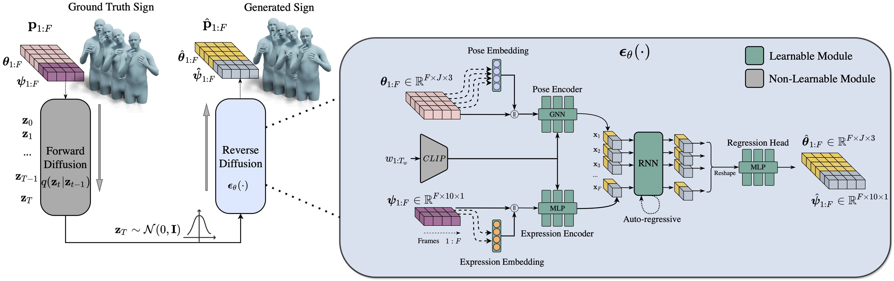

Overview
We present a large scale dataset of American Sign Language.

High Quality results blabla

Sign Languages (SL) serve as the predominant mode of communication for the Deaf and Hard of Hearing communities. The advent of deep learning has aided numerous methods in SL recognition and translation, achieving remarkable results. However, Sign Language Production (SLP) poses a challenge for the computer vision community as the motions generated must be realistic and have precise semantic meanings. Most SLP methods rely on 2D data, thus impeding their ability to attain a necessary level of realism. In this work, we propose a diffusion-based SLP model trained on a curated large-scale dataset of 4D signing avatars and their corresponding text transcripts. The proposed method can generate dynamic sequences of 3D avatars from an unconstrained domain of discourse using a diffusion process formed on a novel and anatomically informed graph neural network defined on the SMPL-X body skeleton. Through a series of quantitative and qualitative experiments, we show that the proposed method considerably outperforms previous methods of SLP. We believe that this work presents an important and necessary step towards realistic neural sign avatars, bridging the communication gap between Deaf and hearing communities.
We present a large scale dataset of American Sign Language.
High Quality results blabla
@InProceedings{Baltatzis_2024_CVPR,
author = {Baltatzis, Vasileios and Potamias, Rolandos Alexandros and Ververas, Evangelos and Sun, Guanxiong and Deng, Jiankang and Zafeiriou, Stefanos},
title = {Neural Sign Actors: A diffusion model for 3D sign language production from text},
booktitle = {Proceedings of the IEEE/CVF Conference on Computer Vision and Pattern Recognition (CVPR)},
month = {June},
year = {2024},
pages = {}
}